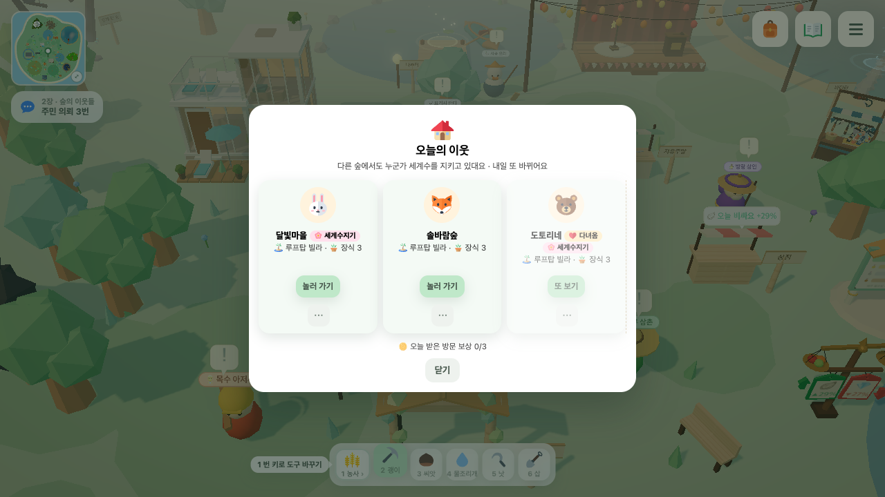
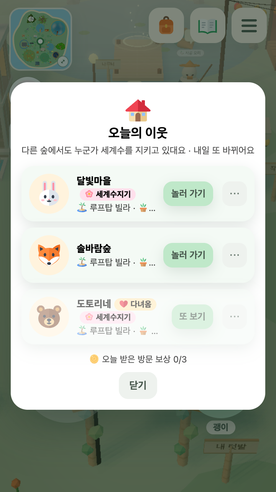
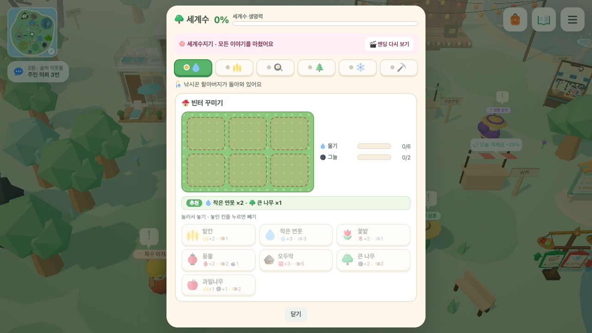
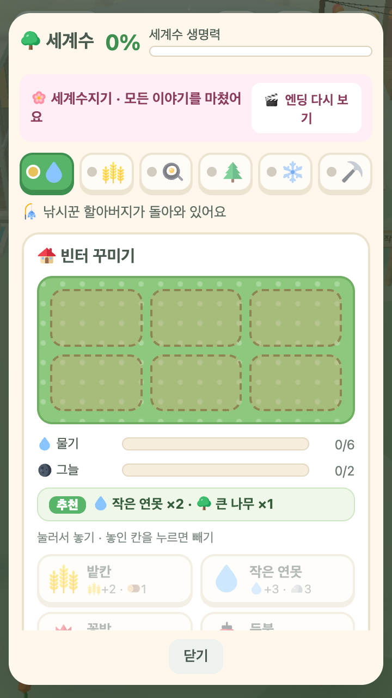
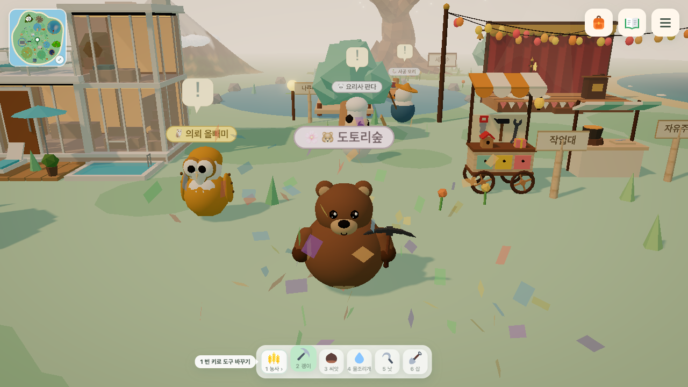
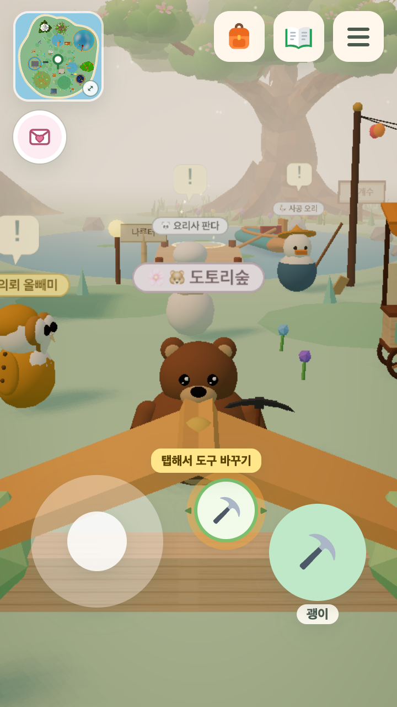

각 줄 왼쪽은 PC, 오른쪽은 폰 세로입니다. PC 왼쪽 위의 🌸 세계수지기 칩은 A·B 공통입니다. 폰에서는 지금도 이야기 칩이 화면에 나오지 않아(모바일 화면 정리), 폰에서 칭호가 보이는 곳은 각 시안의 나머지 자리입니다. 색·문구는 다듬기 전입니다.
PC 왼쪽 위 이야기 칩이 「세계수지기 · 모든 이야기를 마쳤어요」로 바뀝니다. 다른 사람의 "오늘의 이웃" 목록에서도 내 이름 아래에 🌸 배지가 붙습니다.


PC 이야기 칩과 세계수 판 위쪽 띠에만 칭호를 보여 줍니다. 띠에 "🎬 엔딩 다시 보기" 버튼이 같이 붙습니다.


내 캐릭터 머리 위에 주민 이름표와 같은 모양의 「🌸 🐻 이름」 표가 생깁니다. 이웃이 내 마을을 구경할 때도 보입니다.

